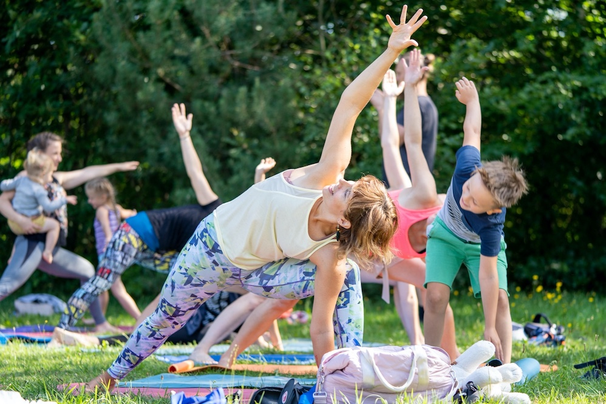
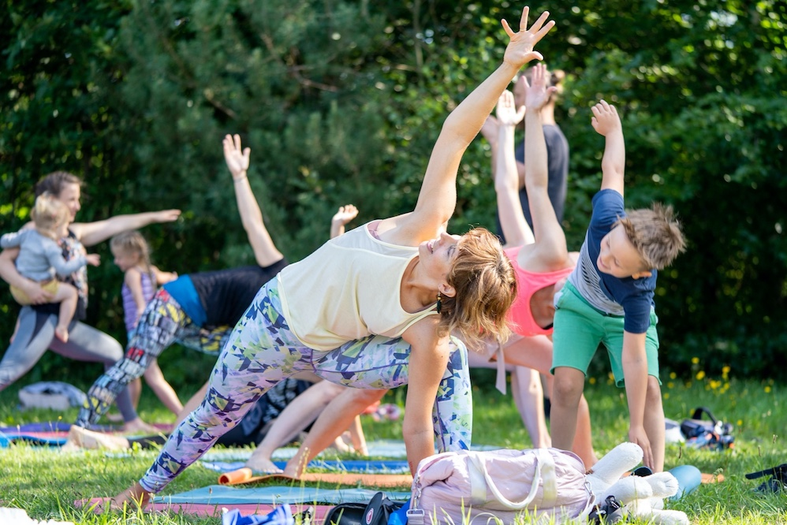

O nas

To miejsce powstało z pasji. Pasji do jogi i ogromnej potrzeby serca. Założeniem Studia Yoga by Ania jest stworzenie ciepłej, domowej atmosfery, miejsca, do którego z chęcią będziecie przybywać, by wspólnie praktykować jogę i wspólnie spędzać czas.
Ania Wiśniewska. Z wykształcenia magister inżynier geodeta, z pasji i potrzeby serca joginka, prywatnie mama dwóch wspaniałych synów i miłośniczka natury.
Swoją praktykę jogi rozpoczęłam mając 23 lata, kiedy moje ciało zbuntowało się i w związku z problemami z kręgosłupem odmówiło współpracy. Joga pozwoliła mi uwolnić się od bólu fizycznego i ustabilizować emocje, których zawsze w moim życiu było za dużo.
Przez 10 lat pogłębiałam swoją praktykę w nurcie jogi klasycznej u Agaty Urbańskiej. Ostatnie 3 lata to fascynacja Vinyasa jogą głównie pod okiem niesamowitej Ulli Wilczyńskiej-Kalak. Już dwa lata, dzielę się jogą ze światem jako nauczyciel. Jestem certyfikowanym nauczycielem Vinyasa Yogi RYT200 Yoga Alliance. Oprócz tego ciągle doskonalę się jako nauczyciel jogi dla dzieci i rodzin.
Intencją, która towarzyszy mi podczas prowadzenia zajęć, jest elastyczne i silne ciało oraz głęboki oddech, a co za tym idzie wzmocnienie i dotlenienie wszystkich części ciała, a także poczucie wewnętrznego spokoju i harmonii. Moje zajęcia łączą intensywną praktykę z wyciszaniem. Chcę, aby każdy praktykujący jogę, uświadomił sobie, że praktyka na macie może pomóc w życiu. Joga buduje siłę, dyscyplinę, wytrwałość i spokój, dzięki jodze odnajdziesz to wszystko, a najważniejsze, że odnajdziesz siebie. Będzie mi miło towarzyszyć Ci w tej podróży.
 
